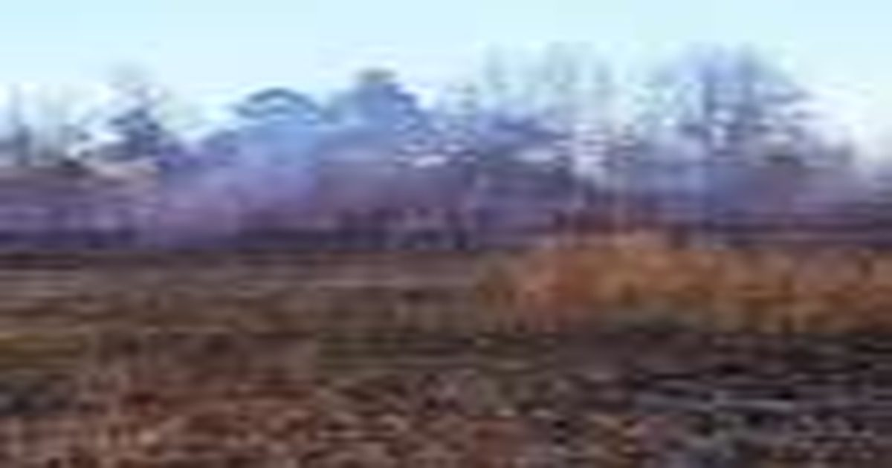

Дикий белый перепел замечен после проекта восстановления среды обитания
Недавно в Исследовательском и образовательном центре Эймса при Университете Теннесси были замечены многочисленные кобылы дикой перепелицы, что стало обнадеживающей вехой в продолжающихся усилиях по восстановлению среды обитания этого вида в этом историческом месте для полевых испытаний птиц.